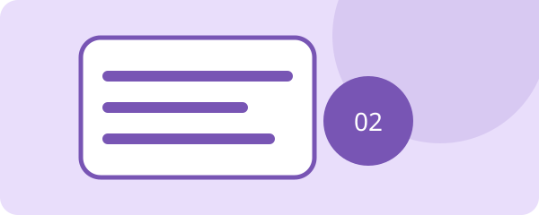

Önceki ders çalışması
Psikolog Randevu Planlayıcısı
Python ile randevu planlama ve çakışma kontrolü.
Teknolojiler: Python
Ne öğrendim / hedefim: Gerçek bir ihtiyacı kurallara ve kontrollere dönüştürmeyi öğrendim.
GitHub deposu →ÇALIŞMALARIM
Tamamlanan ders çalışmam ve bu portfolyo için üç yeni portfolyo demosu birbirinden ayrı gösterilir.
Önceki ders çalışması
Python ile randevu planlama ve çakışma kontrolü.
Teknolojiler: Python
Ne öğrendim / hedefim: Gerçek bir ihtiyacı kurallara ve kontrollere dönüştürmeyi öğrendim.
GitHub deposu →
Bu portfolyo için geliştirilen çalışan demo
Beş duygu arasından seçim, geçici tarihli kayıt listesi ve silme işlevleri.
Teknolojiler: HTML, CSS, JavaScript
Ne öğrendim: Geçici bellekte kayıt tutmayı ve gizliliği önceleyen arayüz tasarlamayı öğrendim.
Duygu takip aracını aç →
Bu portfolyo için geliştirilen demo
Stres, kaygı, duygu düzenleme, psikolojik dayanıklılık ve başa çıkma için çevrilebilir ve filtrelenebilir kartlar.
Teknolojiler: HTML, CSS, JavaScript
Ne öğrendim: İçeriği filtrelenebilir ve klavyeyle kullanılabilir öğrenme kartlarına dönüştürdüm.
Bilgi kartlarını aç →
Bu portfolyo için geliştirilen eğitim demosu
Kurgusal üniversite öğrencisinin akademik stresle başa çıkma seçeneklerini üç aşamada keşfeden etkileşimli senaryo.
Teknolojiler: HTML, CSS, JavaScript
Ne öğrendim: Dallanma mantığını ve farklı seçeneklerin eğitsel açıklamalarını tasarladım.
Karar ağacını aç →Not: Üç demo bu portfolyo için yeni geliştirilmiştir; önceki ders ödevleri değildir. Yönergede istenen dört önceki ders çalışması şartı şu anda karşılanmamaktadır.